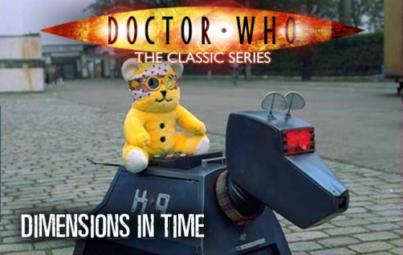
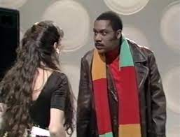
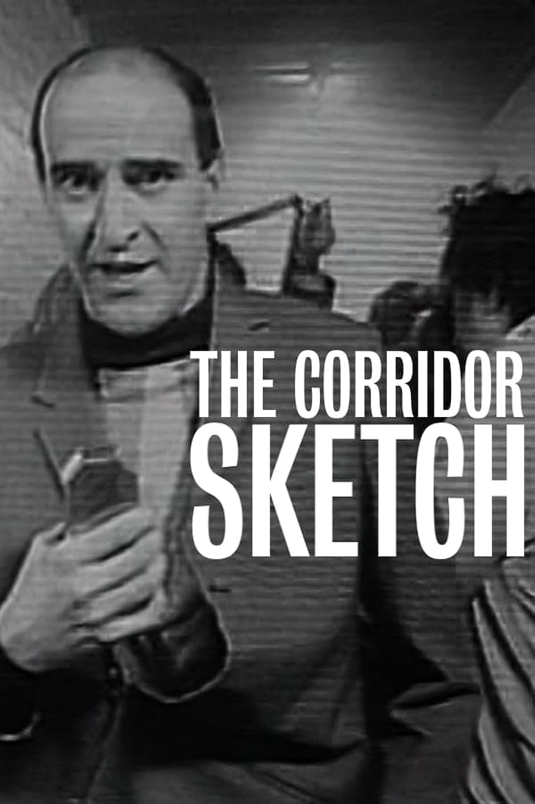
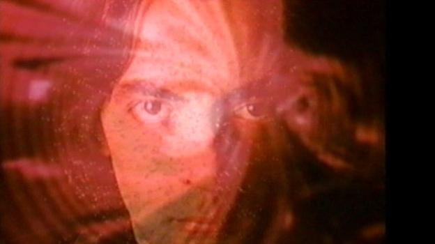
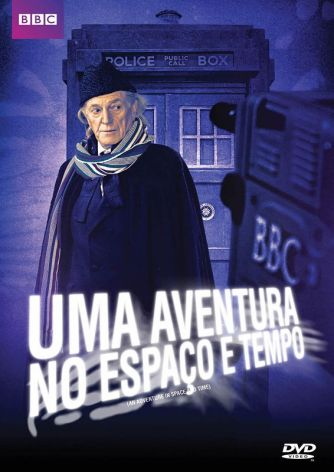
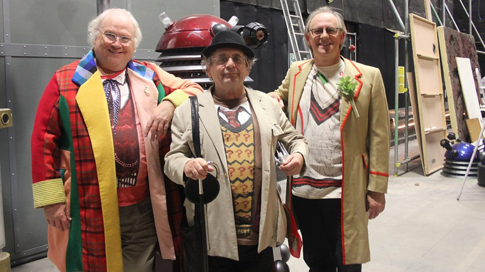
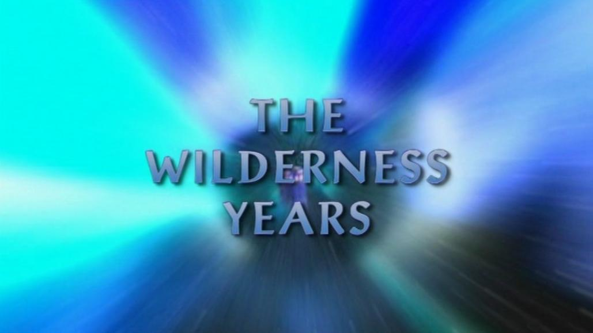
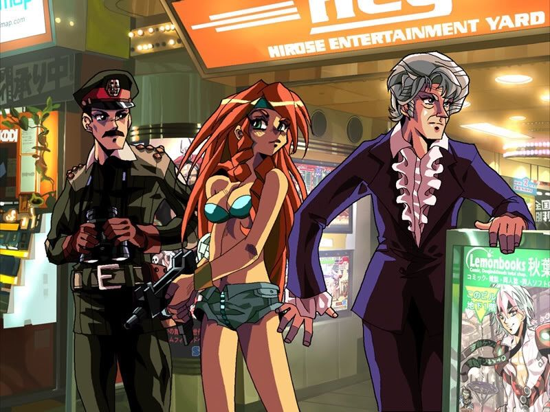

Série Clássica
Especiais
Dimensions In Time
Dimensions In Time foi uma história de duas partes transmitida em 1993 como parte do Childreen In Need (Um Criança Esperança do Reino Unido). Foi uma “celebração” nominal do 30º aniversário de Doctor Who, feito principalmente devido ao cancelamento de The Dark Dimension, um plano para o especial que não saiu do papel. Dimension In Time levantou acima de £ 101,000 para Children in Need de acordo com o apresentador Noel Edmonds.
Foi também a primeira e única vez que John Nathan-Turner recebeu um crédito por ter escrito em uma história televisionada e esta obteve uma audiência maior de tudo o que ele já havia produzido até então.
Em um artigo recapitulando as experiências com a filmagem no set, Sophie Aldred (Ace) relatou o ambiente apressado, mas notou que ainda se sentia como em Doctor Who, indo tão longe quanto para que a história não fosse o início de uma nova temporada. No entanto, muitos não estavam satisfeitos com a história, especialmente no contexto de uma celebração de 30 anos do programa.
Dentro do cânone a explicação dada foi de que tudo não passou de um sonho do Doutor. Porém, as teorias estão sempre por aí: nossa teoria (da equipe Anomalia Who) é de que isto tudo foi sim um sonho, mas um sonho do Curador! Afinal, temos o Tom Baker já bem mais velho e interagindo com, como ele mesmo diz, suas versões passadas. Basta ligar os pontos. E aí, o que você acha? Comenta aí em baixo sua teoria.
ELENCO:
7º Doutor – Sylvester McCoy
6º Doutor – Colin Baker
5º Doutor – Peter Davison
4º Doutor/Curador – Tom Baker
3º Doutor – Jon Pertwee
Rani – Kate O’Mara
Ace – Sophie Aldred
Susan Foreman – Carole Ann Ford
Brigadeiro Lethbridge-Stewart – Nicholas Courtney
Romana II – Lalla Ward
Sarah Jane Smith – Elisabeth Sladen
Nyssa – Sarah Sutton
Leela – Louise Jameson
Peri Brown – Nicola Bryant
Melanie Bush – Bonnie Langford
Voz do K9 – John Leeson
Liz Shaw – Caroline John
Mike Yates – Richard Franklin
Victoria Waterfield – Deborah Watling
FICHA TÉCNICA:
Roteiro e Produção: John Nathan-Turner
Direção: Stuart McDonnald
LEGENDAS:
Tradução, Sincronia e Revisão: Lucas Harkness
Dimensions In TimeLegendado
Esquetes
Ainda em 1963, ano de sua estreia, Doctor Who ganhou sua primeira menção numa esquete cômica, no programa “It’s a Square World” e de lá pra cá, a quantidade de comédia feita sobre o Doctor e a série em si só cresce.
The Lenny Henry Show
Em 1986, em meio ao longo hiato no qual Doctor Who estava, vemos Lenny Henry no papel do recém-regenerado 7º Doctor, que ao lado de sua companheira Peri acabam na Terra, em 2010, onde enfrentarão o que parecia ser um velho inimigo.
Assistir Online
The Corridor Sketch
Feito em 1991, é um mockumentary (falso documentário), onde um repórter, interpretado por Nicholas Briggs (voz dos Daleks e Cybermen), visita o set de Doctor Who no primeiro dia de filmagem da série clássica, em Agosto de 1963.
Assistir Online Download
The Curse of Fatal Death
Foi exibido em 1999 como um especial de Doctor Who para um teleton britânico, o Red Nose Day. Essa paródia foi o primeiro trabalho de Steven Moffat com Doctor Who. O Doctor aqui foi interpretado por vários atores, Rowan Atkinson, Richard E. Grant, Jim Broadbent, Hugh Grant e Joanna Lumley. Esse é o único episódio feito fora da produção oficial da série a constar na lista oficial da série, considerando-se os fatos nele verdadeiros num universo alternativo. O Doctor marca de encontrar-se com o Master no planeta Tersurus, onde pretende fazer um importante comunicado a seu velho inimigo.
Em 1999, Steven Moffat escreveu seu primeiro trabalho televisionado para Doctor who, The Curse of Fatal Death (A Maldição da Morte Fatal), um curta de 18 minutos que fez parte do Comic Relief (um Criança Esperança do Reino Unido). Decidiram fazer algo como um final alternativo para a série, já que a mesma estava em hiato desde 1989 tendo apenas um filme em 1996 sem previsão de volta para a TV.
Nesse episódio temos primeira vez, até então, uma DoutorA: Joanna Lumley. Coisa que aconteceria anos mais tarde com Jodie Whittaker para fazer, coincidentemente (ou não), também a 13ª versão do personagem. E também temos duas outras figuras iluestres interpretenado o Doutor aqui: Rowan Atkinson, (famoso pelo personagem Mr. Bean) como 9º Doutor e Richard E. Grant, como 10º Doutor, que em 2003 se tornaria o 9º Doutor em Scream of The Shalka e o Dr. Simeão no especial de Natal “The Snowmen”, na 7ª temporada da Série Nova de Doctor Who.
É interessante como Steven Moffat colocou aqui ideias que utilizaria anos mais tarde ao assumir o comando do programa: Emma dizendo que o Doutor nunca foi cruel ou covarde – o que mais tarde foi transformado na promessa e significado do título de “The Doctor”; e a ideia de que o universo não pode se manter sem o Doutor, como mostrado ao fim da 6ª temporada da Série Nova.
Além dessas coisas, poderia escrever dezenas de parágrafos sobre esse episódio especial e sua importância, mas tenho algo mais importante a fazer no momento. O quê? Bem, eu explico depois…
ELENCO
9º Doutor- Rowan Atkinson
10º Doutor – Richard E Grant
11º Doutor – Jim Broadbent
12º Doutor – Hugh Grant
13ª Doutora – Joanna Lumley
Emma – Julia Sawalha
Mestre – Jonathan Pryce
FICHA TÉCNICA:
Roteiro: Steven Moffat
Direção: John Henderson
Produção: Sue Vertue
LEGENDAS:
Tradução, Sincronia e Revisão: Lucas Harkness
Download Download Assistir Online
Especiais de 50 Anos
An Adventure in Space and Time
An Adventure in Space and Time (Uma Aventura no Espaço e Tempo) foi lançado em 2013 para comemorar o 50º aniversário de Doctor Who. Um emocionante docudrama (documentário em formato de um filme) foi em grande parte sobre a era de William Hartnell como o 1º Doutor dentro do programa. Além de mostrar como foram os primeiros dias da série e sua produção e os desafios enfrentados por Verity Lambert e Sidney Newman com a criação, o documentário também focou na vida pessoal de Hartnell e seu crescente problema de saúde que o levou a deixar Doctor Who.
A ideia de fazer isto veio do roteirista, produtor executivo e grande fã Mark Gatiss, que já tinha o desejo de filmar algo desse tipo desde o 40º aniversário de Doctor Who, em 2003.
David Bradley que aqui interpretou William Hartnell foi convidado quatro anos depois para interpretar o 1º Doutor no especial de natal Twice Upon A Time e atuou ao lado de Gatiss, no especial sendo “o Capitão”.
Bradley no ano seguinte ao especial foi convidado a Big Finish para estrelar sua própria série de aventuras como o 1º Doutor “The First Doctor Adventures” que já está em sua segunda temporada.
Sinopse:
Uma jovem produtora, frustrada com o teto de vidro da televisão britânica, um novo executivo na BBC, um jovem diretor de ascendência indiana e um velho ator lutando por sua legitimidade artística se juntam em 1963 para dar início a um novíssimo programa de televisão entitulado Doctor Who. Após algumas dificuldades iniciais, o programa se torna um sucesso, deixando o ator sozinho para perpetuar suas tradições e encarar seu cada vez mais preocupante estado de saúde.
An Adventure In Space and Time (Legendas Anomalia Who | Dublagem Syfy)
Assistir OnlineDublado | Legendado
Versão DVD Brasileiro Oficial
DownloadLegendado
EXTRAS
LegendadoMP4 – MKV Legendado480p – 720p
The Five(ish) Doctors Reboot
Sinopse:
Com o aniversário de 50 anos de Doctor Who perto de ser filmado, os Doutores “clássicos” estão ansiosos para participar. Mas será que vão conseguir?
Links:
MKV Legendado480p – 720p
Pacote de Legendas dos Especiais
The Wilderness Years
DownloadLegendado
The Doctor Who Anime
DownloadLegendado
Créditos dos links Videos, das Imagens e dos Textos: Universo Who, Os Mestres de Luxor, Parceria Who e Senhor Secreto